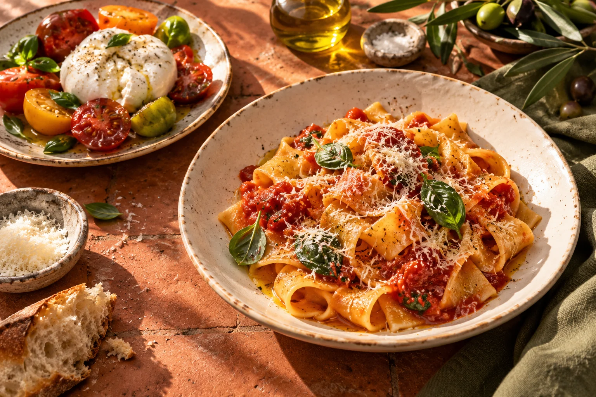

Burrata & heirloom tomatoes
$16Creamy burrata, ripe tomatoes, basil oil, toasted sourdough.
GOOD FOOD. GREAT COMPANY.
Handmade pasta, something seasonal,
and every reason to stay for dessert.

No dishes match. Try a different search or choose Everything.
Dietary labels describe this fictional menu. For a real menu, ask the restaurant about ingredients, allergies, and cross-contact.